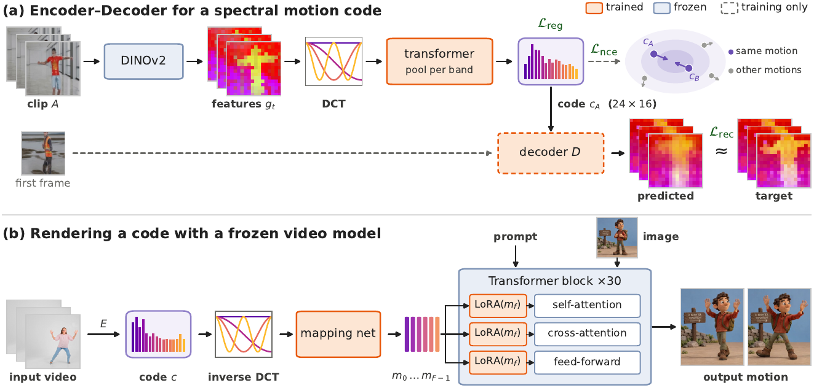

We introduce CoSMo, a compact spectral space of body motion in video, in which each motion is a single code that can be compared and edited without training, transferred to a new subject, interpolated, composed, scaled in intensity and detail, or sampled anew. Our encoder expresses how a clip's DINOv2 features change over time in a fixed temporal basis, the discrete cosine transform (DCT), and compresses this change into 384 numbers. Because each frequency band is the same cosine pattern in every code, codes are aligned in time, ordered from coarse to fine, and can be blended or added without matching frames. What stays constant over a clip cancels, and keeping fewer frequencies leaves less of the performer and scene. The encoder is trained on real videos and on synthetic motions of several characters, and lightweight adapters let a frozen image-to-video model render any code with any subject. On unseen videos, our code ranks the same motion on other bodies higher than DisMo, a per-frame representation, while its nearest neighbors show the same performer about 40% less often with a seven times more compact code. In generation, without per-motion training, CoSMo transfers motion more faithfully than FlexiAct and a text-prompt baseline, at least as faithfully as DisMo on automatic metrics and clearly better between humanoid bodies, and its blends keep much more of both source motions than DisMo's. Users rank CoSMo first nearly twice as often as DisMo for motion transfer (59% vs. 30%), place it top-two 94% of the time, and prefer it in 76% of the interpolation comparisons.

The motion of a source video, encoded as one code, animates a new target image. Left: the source video. Right: ours on Wan2.2, starting from the target image.
Blending the codes of two motions, (1 − w)·A + w·B, moves gradually from motion A (w = 0) to motion B (w = 1). Both ends are plain transfers of A and B.
Adding the codes of two motions, A + B, gives one motion that does both. Each example shows A alone, B alone and A + B on the same target.
Each code is a stack of 16 temporal frequency bands. Keeping only the lowest bands (k < 2, 4, 8) gives a coarser version of the motion, its slow course without the fast detail; adding bands brings the detail back.
Moving a code along one direction, from the stillest training motions toward the most moving ones, turns the motion down (α < 0) or up (α > 0). α = 0 is the plain transfer.
The same code rendered at 17 to 129 frames, though the model was trained only at 61. The whole motion fits each length, so the output length sets how fast it plays.
Each code here is a new motion, made in the code space rather than taken from a video.
DisMo against our main model. Both get the same source video and target image.
Text prompt, FlexiAct and DisMo run with their official code and protocol on the same inputs. Ours here runs on CogVideoX-5B, the backbone DisMo/FlexiAct uses.
Text prompt gets a written description of the motion. FlexiAct is trained on each motion source video and also gets a motion description. DisMo and CoSMo get only an appearance prompt for the target. CoSMo's prompt ends with “an articulated motion, high quality”, the fixed caption every training clip had; it is the same for every video and names no motion.
Only DisMo can interpolate; we apply the same weights to its per-frame embeddings, frame by frame. Ours runs on CogVideoX-5B.